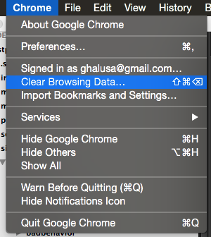
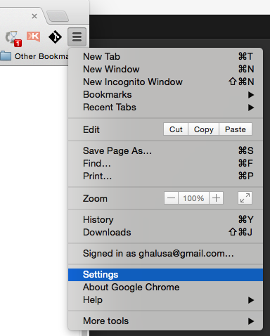
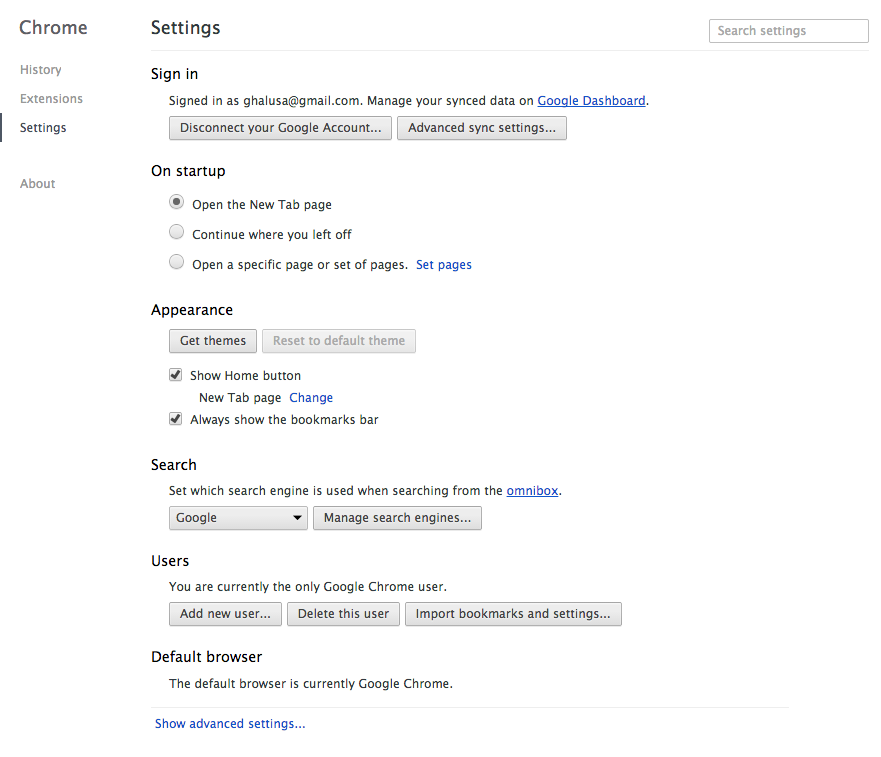
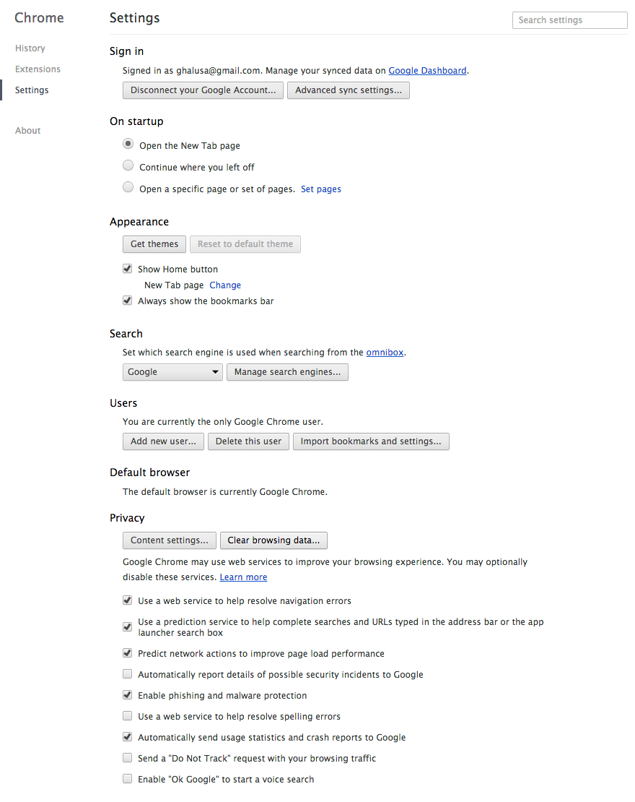
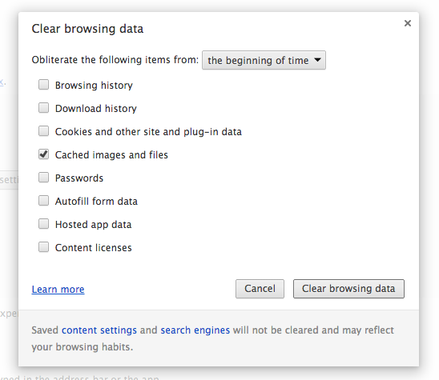

Go to the Settings, Via the Main Menu

OR... Go to the Settings, Via the Top Right Menu

Click on "Show advanced settings..." (very bottom)

Click "Clear browsing data..."

Only select the "Cached images and files" and Click "Clear browsing data"

Last modified on November 3, 2014. Prepared by Goran Halusa, Leidos Biomedical Research, Inc.